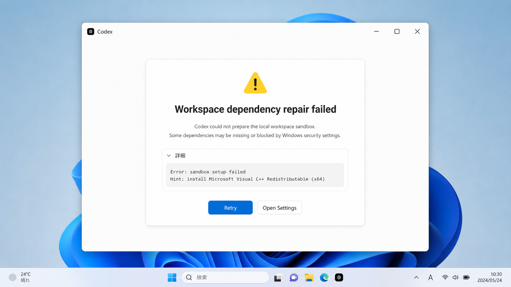
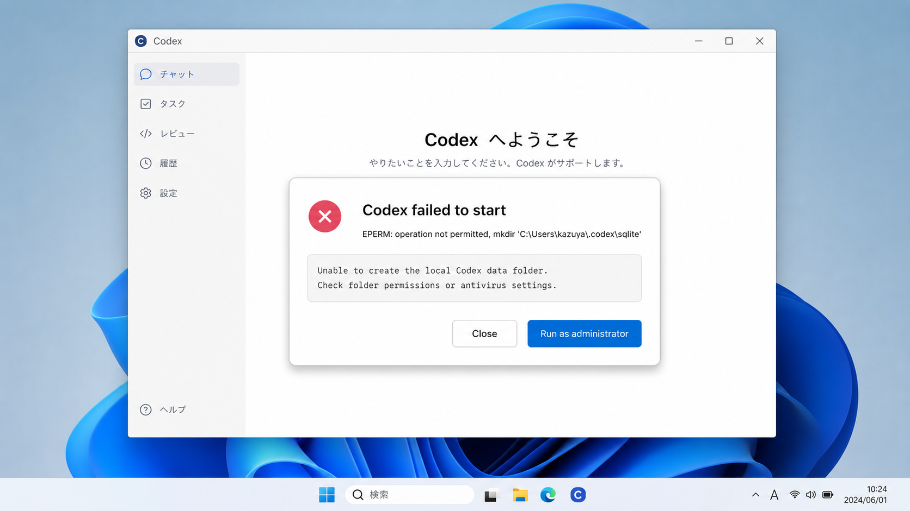
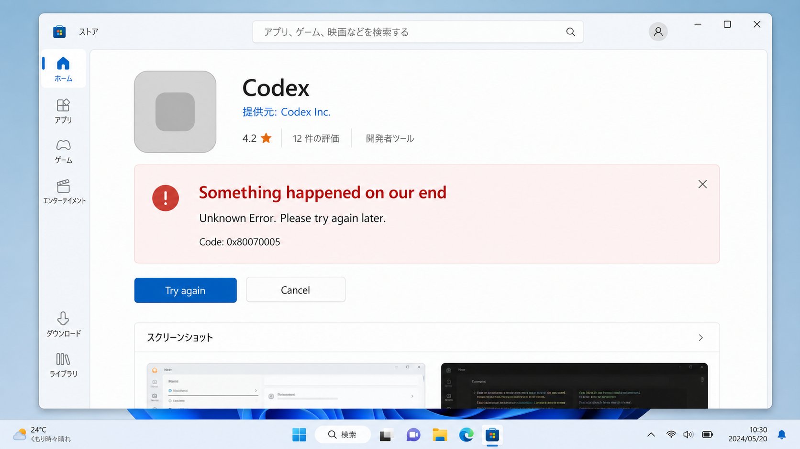
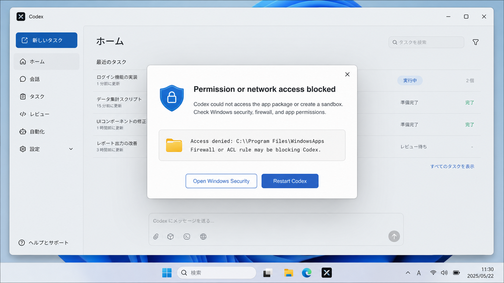

エラー画面を撮る
画面全体のスクリーンショットを残します。文字が読める状態だと確認しやすいです。
Windows版で困った時
Codexの初回起動やアップデート直後は、Windowsの権限・セキュリティ設定・Storeの状態によって止まることがあります。 まずはエラー画面をスクリーンショットで残し、下の再現画像に近いものを探してください。

最初にやること
まずは安全な確認から進めます。会社や学校のPCでは、管理者権限が必要な場合があります。
画面全体のスクリーンショットを残します。文字が読める状態だと確認しやすいです。
一度閉じてから、もう一度Codexを開きます。更新直後の一時的な不具合なら直ることがあります。
Windows UpdateやStore更新が残っている場合、PC再起動で状態が整うことがあります。
下の「共有するもの」をそろえて、講座前に相談してください。
ケース1
「workspace dependency repair」「sandbox setup failed」のような表示が出る場合です。
Codexが作業用の安全な環境を準備できず、依存関係の修復やサンドボックス作成で止まっている状態です。
設定ファイルを直接編集する場合、Windowsでは C:\Users\ユーザー名\.codex\config.toml を扱います。
初心者の方は無理に編集せず、まずスクリーンショットを共有してください。
ケース2
.codex フォルダを作れない、または読み書きできない時に起きることがあります。

EPERM: operation not permitted や .codex\sqlite のような文字が表示されます。
.codex フォルダへの権限が足りない%USERPROFILE%\.codex を .codex_backup などに名前変更してから再起動します。
.codex フォルダを削除・リネームする前に、必要そうなファイルがないかだけ確認してください。
不安な場合はスクリーンショットを共有してから進めましょう。
ケース3
インストール前に止まる場合は、CodexではなくStore側の状態が原因のことがあります。

Store画面で「Unknown Error」「Something happened on our end」のように表示され、インストールが始まりません。
wsreset.exe を実行してStoreのキャッシュをクリアします。ケース4
Windowsの保護機能や会社PCの制限で、Codexの動作が止まることがあります。

WindowsApps、Access denied、Firewall、ACL のような文字が出る場合です。
補足
講座ではCodexデスクトップアプリを使うため、CLIのセットアップは必須ではありません。
Codexのアップデート直後に起動しない場合は、Codexを閉じてPCを再起動します。
それでも直らない時は、%USERPROFILE%\.codex をバックアップ名に変更してから再起動すると改善することがあります。
npm install -g @openai/codex でPermissionエラーが出る場合は、PowerShellの管理者実行やPATH設定が関係します。
今回の講座ではCLIは使わないため、無理に進めなくて大丈夫です。